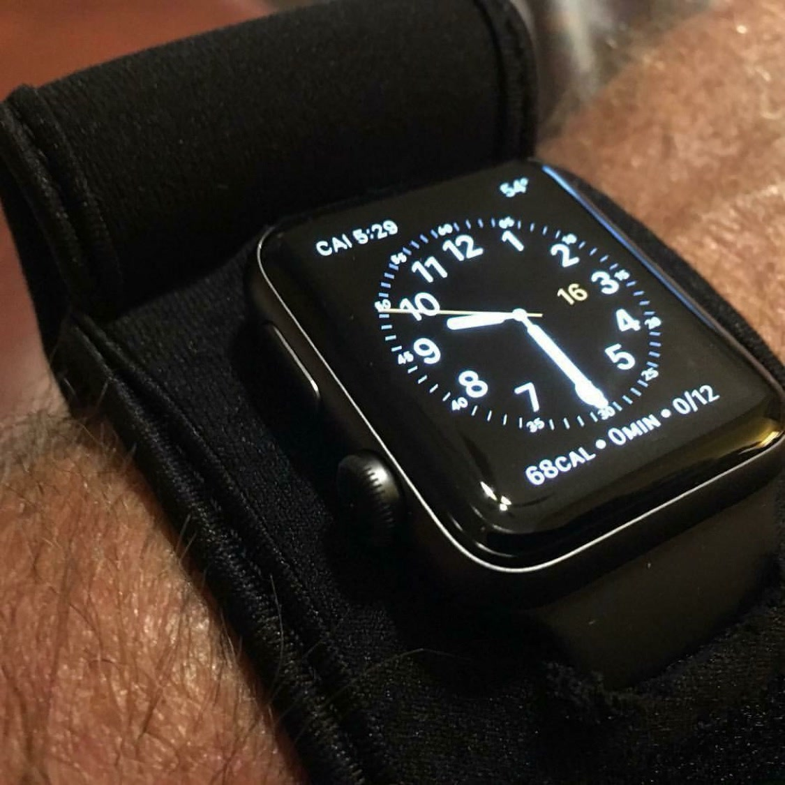
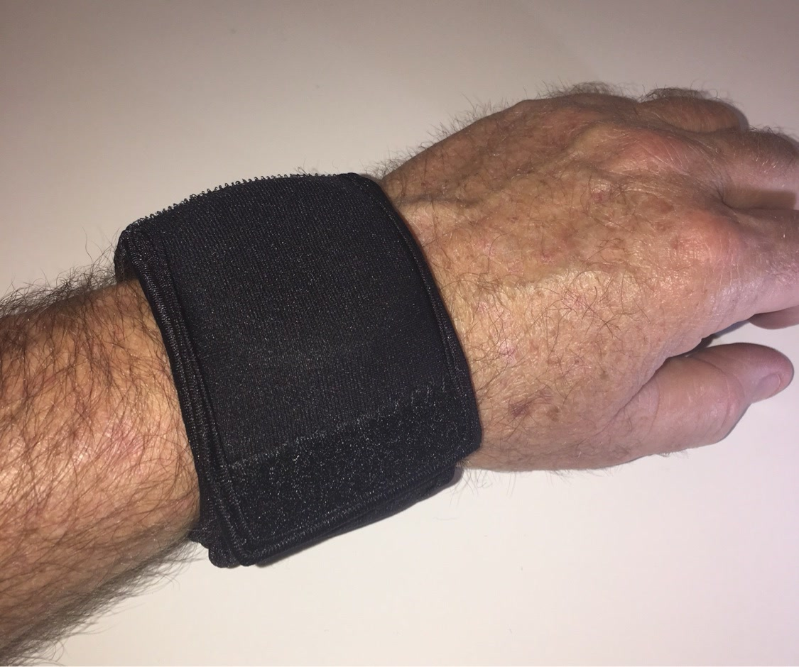
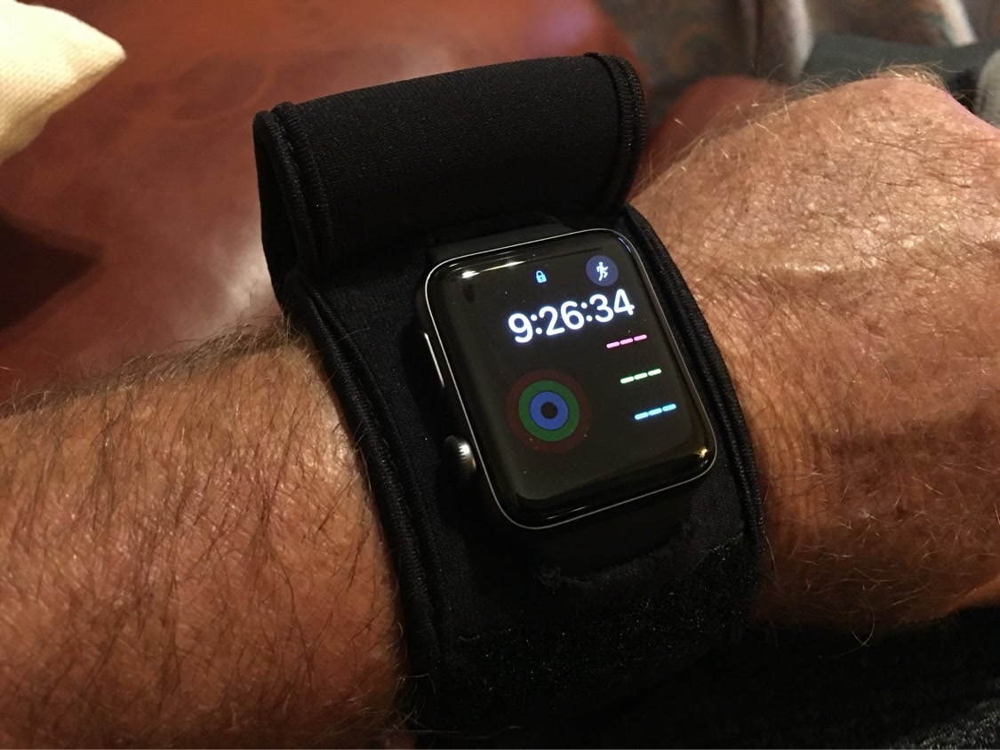
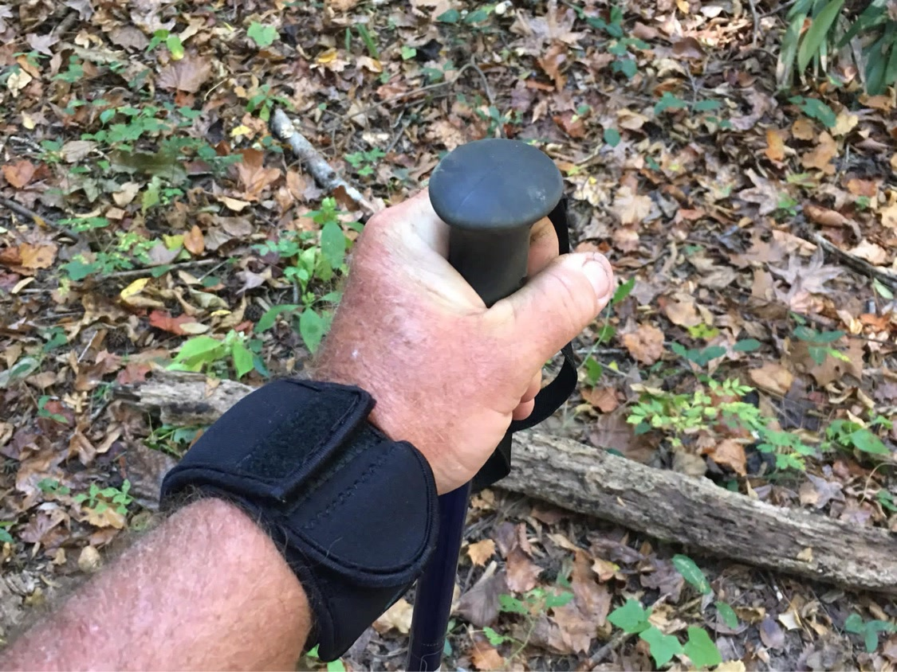

November 10, 2026
Camo: Built to Blend In
The quiet color in the lineup. Why Camo is the pick for hunters, campers, and anyone who wants gear that blends in and still guards the watch.
Read moreFrom the blog
Practical advice for keeping your watch looking new, from the veteran owned shop behind the WATCH-ET sleeve.
November 10, 2026
The quiet color in the lineup. Why Camo is the pick for hunters, campers, and anyone who wants gear that blends in and still guards the watch.
Read moreNovember 10, 2026
Winter is rough on a watch. Cold, gloves, salt, and the jump from freezing air to warm rooms. Simple habits that keep yours looking new all season.
Read more
November 10, 2026
Your Apple Watch goes to the gym, the job site, and the trail with you. The screen and case take hits every day. Simple ways to keep yours looking new.
Read more
November 3, 2026
Docks, boats, sand, and salt air are rough on a watch. How Nautical Blue guards yours on boat days, fishing trips, and lake weekends.
Read more
November 3, 2026
Airports, road trips, and new cities put a watch through a lot. Simple habits that keep yours guarded from the first flight to the last dinner out.
Read more
November 3, 2026
Bars, plates, racks, and sweat are rough on a watch. How to train hard and bring yours home looking new.
Read more
October 27, 2026
Metal tools, concrete, dust, and long shifts are rough on a watch. How to guard it through a full work day.
Read moreOctober 27, 2026
The brightest color in the lineup. Why Key Lime is the pick for folks who want gear they can spot at a glance.
Read more
October 27, 2026
Pack straps, poles, sweat, and rocks are rough on a watch. How to ruck hard and bring yours home looking new.
Read more
October 20, 2026
The loudest color in the lineup. Why Sunburst Orange is the pick for folks who work outside and want gear they can spot at a glance.
Read more
October 20, 2026
Hot brass, concrete benches, and barricades are rough on a watch. How to shoot all day and bring your watch home unmarked.
Read more
October 20, 2026
Sweat, dust, and sunscreen dull a finish fast. A simple routine that keeps your watch looking new without a single scratch.
Read more
October 13, 2026
Rocks, trekking poles, and pack straps are rough on a watch. How to bring yours hiking and keep it looking new.
Read more
October 13, 2026
Solid black neoprene that goes with everything. Why Night OP's Black is the pick for work, travel, and everyday carry.
Read more
October 13, 2026
A useful gift at a fair price. Why watch lovers actually use a WATCH-ET sleeve, and how to pick the right size and color.
Read more
October 6, 2026
Desks, door frames, gym racks, and junk drawers. The small daily hits that dull a watch, and the simple fixes.
Read moreThe WATCH-ET sleeve is designed to help protect your watch from the everyday knocks in the post above.
Order Yours